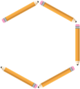

Andi diminta Ibunya untuk menyusun beberapa pensil dengan panjang yang sama untuk membentuk segi enam, setelah Andi selesai membuat dua segi enam ibu bertanya ?
|
Ibu |
: |
“Berapa banyak pensil yang kamu perlukan untuk membuat dua buah segi enam?” |
|
Andi |
: |
“Ada sebelas pensil Bu. ” |
|
Ibu |
: |
“Lalu berapa banyak pensil yang kamu perlukan untuk membuat delapan buah segi enam ?” |
Dari percakapan tersebut Ibu bertanya kepada Andi berapa banyak pensil yang dibutuhkan untuk membuat delapan segi enam. Sebelumnya Andi telah membuat dua buah segi enam dengan memerlukan sebelas pensil (perhatikan Gambar 1).
Mari kita lihat bagaimana banyak pensil dalam pembuatan segi enam tersebut. Perhatikan tabel 1.
Tabel 1. Ilustrasi dari masalah
|
Banyaknya segi enam |
Banyak pensil yang diperlukan |
||
|
1 |
 |
6 |
\[= 1\] Pensil merah + 5 Pensil kuning. \[=1+5\] |
|
2 |
11 |
\[= 1\] Pensil merah + 5 Pensil kuning + 5 Pensil kuning. \[=1+5+5\] |
|
|
3 |
16 |
\[= 1\] Pensil merah + 5 Pensil kuning + 5 Pensil kuning + 5 Pensil kuning. \[=1+5+5+5\] |
|
Dari Tabel 1 dapat diketahui :
Banyak pensil untuk 1 segi enam \[=1+5 = 1+1 \times 5\]
Banyak pensil untuk 2 segi enam \[= 1+5+5 = 1+2 \times 5\]
Banyak pensil untuk 3 segi enam \[= 1+5+5+5 = 1+3 \times 5\]
Berdasarkan pernyataan di atas maka banyak pensil untuk segi enam :
\[1 + (\] Banyak segi enam \[\times 5 )\]
Jika “banyak segi enam“ kita misalkan dengan huruf \[a\], maka bentuk matematika untuk menentukan banyak pensil yang diperlukan untuk membuat segi enam sebagai berikut :
\[1+(a ×5)\]
\[1+5a\]
Bentuk matematika yang memisalkan bilangan yang belum diketahui dengan sebuah huruf inilah yang dinamakan Bentuk Aljabar.
Jadi jika Andi ingin membuat delapan buah segi enam maka pensil yang diperlukan adalah :
\[=1+(a \times 5)\]
\[=1+(8 \times 5)\]
\[=1+(40)\]
\[=41\] Pensil.
Banyak pensil untuk 2 segi enam ?